1. Overview
A full-market A-share simulated trading application implemented natively on both Android and HarmonyOS. Both clients talk to a Python Flask proxy that forwards requests to the Sina Finance API (solving cross-origin and GBK-encoding issues) with server-side SQLite persistence. Features: live quotes for the entire market (SSE/SZSE/STAR/BSE), search by code / Chinese name / pinyin, watchlists, multi-period K-line charts drawn on Canvas, limit-order simulated trading with position and P&L accounting, trading calendar, equity-curve charts and an AI assistant. New accounts start with ¥1,000,000 in simulated capital.
| Android | Kotlin · Jetpack Compose · Material3 · Navigation Compose · Room · Retrofit + OkHttp · Coroutines · Canvas |
|---|---|
| HarmonyOS | ArkTS / ETS · ArkUI declarative components · @StorageLink / @Watch · Canvas · Preferences · http module (API 6.0.1) |
| Backend | Python Flask proxy → Sina Finance API · SQLite storage · GBK decoding |
| Data tables | trade / position / user_account / watchlist / asset_snapshot |
2. Demo videos
Android version:
HarmonyOS version:
3. Key code — Android
3.1 Networking: Retrofit API service
StockApiService.kt (API服务)
package com.englearn.stock.service
import com.englearn.stock.model.KLineItem
import com.englearn.stock.model.MarketIndex
import com.englearn.stock.model.Stock
import com.google.gson.Gson
import com.google.gson.reflect.TypeToken
import kotlinx.coroutines.Dispatchers
import kotlinx.coroutines.withContext
import okhttp3.MediaType.Companion.toMediaType
import okhttp3.OkHttpClient
import okhttp3.Request
import okhttp3.RequestBody.Companion.toRequestBody
import java.net.URLEncoder
import java.util.concurrent.TimeUnit
class StockApiService {
private val gson = Gson()
private val client = OkHttpClient.Builder()
.connectTimeout(15, TimeUnit.SECONDS)
.readTimeout(20, TimeUnit.SECONDS)
.build()
companion object {
const val SERVER_IP = "http://10.133.10.88:5000"
private var instance: StockApiService? = null
fun getInstance(): StockApiService {
return instance ?: synchronized(this) {
instance ?: StockApiService().also { instance = it }
}
}
}
private suspend fun doGet(url: String): String = withContext(Dispatchers.IO) {
val request = Request.Builder().url(url).build()
val response = client.newCall(request).execute()
response.body?.string() ?: ""
}
private suspend fun doPost(url: String, json: String): String = withContext(Dispatchers.IO) {
val body = json.toRequestBody("application/json; charset=utf-8".toMediaType())
val request = Request.Builder().url(url).post(body).build()
val response = client.newCall(request).execute()
response.body?.string() ?: ""
}
suspend fun fetchAllStocks(market: String = "all", page: Int = 1, pageSize: Int = 200): List<Stock> {
return try {
val url = "$SERVER_IP/api/stocks?market=$market&page=$page&pageSize=$pageSize"
val json = doGet(url)
val type = object : TypeToken<Map<String, Any>>() {}.type
val map: Map<String, Any> = gson.fromJson(json, type)
val stocksList = map["stocks"] as? List<*> ?: emptyList<Any>()
stocksList.mapNotNull { item ->
val s = item as? Map<*, *> ?: return@mapNotNull null
Stock(
code = s["code"]?.toString() ?: "",
name = s["name"]?.toString() ?: "",
currentPrice = (s["currentPrice"] as? Number)?.toDouble() ?: 0.0,
changePercent = (s["changePercent"] as? Number)?.toDouble() ?: 0.0,
changeAmount = (s["changeAmount"] as? Number)?.toDouble() ?: 0.0,
volume = (s["volume"] as? Number)?.toLong() ?: 0,
todayOpen = (s["todayOpen"] as? Number)?.toDouble() ?: 0.0,
yesterdayClose = (s["yesterdayClose"] as? Number)?.toDouble() ?: 0.0,
highPrice = (s["highPrice"] as? Number)?.toDouble() ?: 0.0,
lowPrice = (s["lowPrice"] as? Number)?.toDouble() ?: 0.0,
market = s["market"]?.toString() ?: ""
)
}
} catch (e: Exception) {
emptyList()
}
}
suspend fun fetchStockQuote(code: String): Stock? {
return try {
val json = doGet("$SERVER_IP/api/stock/$code")
val type = object : TypeToken<Map<String, Any>>() {}.type
val map: Map<String, Any> = gson.fromJson(json, type)3.2 Trade service: funds & position validation
TradeService.kt (交易服务)
package com.englearn.stock.service
import com.englearn.stock.db.AppDatabase
import com.englearn.stock.model.*
import java.text.SimpleDateFormat
import java.util.*
class TradeService(private val db: AppDatabase) {
private val api = StockApiService.getInstance()
private val sdf = SimpleDateFormat("yyyy-MM-dd HH:mm:ss", Locale.getDefault())
private val dateFmt = SimpleDateFormat("yyyy-MM-dd", Locale.getDefault())
suspend fun initAccount(userId: Long = 1) {
val existing = db.userAccountDao().getByUser(userId)
if (existing == null) {
db.userAccountDao().insert(UserAccount(
userId = userId,
username = "admin",
totalAssets = 1000000.0,
availableFunds = 1000000.0,
createTime = sdf.format(Date()),
updateTime = sdf.format(Date())
))
}
}
suspend fun getAccount(userId: Long = 1): UserAccount {
initAccount(userId)
return db.userAccountDao().getByUser(userId)!!
}
suspend fun buyStock(userId: Long, stockCode: String, quantity: Int, limitPrice: Double): TradeResult {
val account = getAccount(userId)
val stock = api.fetchStockQuote(stockCode) ?: return TradeResult(false, "无法获取股票行情")
if (limitPrice > stock.currentPrice) return TradeResult(false, "限价不能高于当前市价 ${stock.currentPrice}")
val totalAmount = limitPrice * quantity
if (account.availableFunds < totalAmount) return TradeResult(false, "可用资金不足，需要 ¥${"%.2f".format(totalAmount)}")
val trade = Trade(
userId = userId, stockCode = stockCode, stockName = stock.name,
tradeType = "BUY", limitPrice = limitPrice, tradePrice = stock.currentPrice,
tradeQuantity = quantity, tradeAmount = stock.currentPrice * quantity,
tradeTime = sdf.format(Date()), status = "COMPLETED"
)
db.tradeDao().insert(trade)
val newFunds = account.availableFunds - trade.tradeAmount
db.userAccountDao().updateFunds(userId, newFunds, newFunds, sdf.format(Date()))
val existing = db.positionDao().getByStock(userId, stockCode)
if (existing != null) {
val totalQty = existing.quantity + quantity
val avgCost = (existing.costPrice * existing.quantity + trade.tradePrice * quantity) / totalQty
db.positionDao().update(existing.copy(
quantity = totalQty, costPrice = avgCost, currentPrice = stock.currentPrice,
profitLoss = (stock.currentPrice - avgCost) * totalQty,
profitLossPercent = if (avgCost > 0) (stock.currentPrice - avgCost) / avgCost * 100 else 0.0,
updateTime = sdf.format(Date())
))
} else {
db.positionDao().insert(Position(
userId = userId, stockCode = stockCode, stockName = stock.name,
quantity = quantity, costPrice = stock.currentPrice, currentPrice = stock.currentPrice,
updateTime = sdf.format(Date())
))
}
recordSnapshot(userId)
return TradeResult(true, "买入成功", trade)
}
suspend fun sellStock(userId: Long, stockCode: String, quantity: Int, limitPrice: Double): TradeResult {
val account = getAccount(userId)
val stock = api.fetchStockQuote(stockCode) ?: return TradeResult(false, "无法获取股票行情")
if (limitPrice < stock.currentPrice) return TradeResult(false, "限价不能低于当前市价 ${stock.currentPrice}")
val position = db.positionDao().getByStock(userId, stockCode) ?: return TradeResult(false, "无持仓")
if (position.quantity < quantity) return TradeResult(false, "持仓不足，当前持仓 ${position.quantity} 股")
val trade = Trade(
userId = userId, stockCode = stockCode, stockName = stock.name,3.3 K-line screen: Canvas candlestick drawing
KLineScreen.kt (K线图)
package com.englearn.stock.ui.kline
import androidx.compose.foundation.Canvas
import androidx.compose.foundation.layout.*
import androidx.compose.foundation.lazy.LazyRow
import androidx.compose.foundation.lazy.items
import androidx.compose.material.icons.Icons
import androidx.compose.material.icons.filled.ArrowBack
import androidx.compose.material3.*
import androidx.compose.runtime.*
import androidx.compose.ui.Modifier
import androidx.compose.ui.geometry.Offset
import androidx.compose.ui.graphics.Color
import androidx.compose.ui.graphics.Path
import androidx.compose.ui.graphics.drawscope.Stroke
import androidx.compose.ui.text.font.FontWeight
import androidx.compose.ui.unit.dp
import androidx.compose.ui.unit.sp
import com.englearn.stock.model.KLineItem
import com.englearn.stock.service.StockApiService
import kotlinx.coroutines.launch
@OptIn(ExperimentalMaterial3Api::class)
@Composable
fun KLineScreen(stockCode: String, stockName: String, scale: String, onBack: () -> Unit) {
val api = remember { StockApiService.getInstance() }
val scope = rememberCoroutineScope()
var klineData by remember { mutableStateOf<List<KLineItem>>(emptyList()) }
var selectedScale by remember { mutableStateOf(scale) }
val isIntraday = selectedScale == "5"
val title = if (isIntraday) "分时图 - $stockName" else "K线 - $stockName"
LaunchedEffect(selectedScale) {
val datalen = when (selectedScale) {
"5" -> 48; "1680" -> 60; "7200" -> 36; else -> 120
}
klineData = api.fetchKLineData(stockCode, selectedScale, datalen)
}
Scaffold(
topBar = {
TopAppBar(title = { Text(title) },
navigationIcon = { IconButton(onClick = onBack) { Icon(Icons.Default.ArrowBack, "返回") } })
}
) { padding ->
Column(modifier = Modifier.padding(padding)) {
// 切换按钮
LazyRow(modifier = Modifier.fillMaxWidth().padding(8.dp), horizontalArrangement = Arrangement.spacedBy(6.dp)) {
val scales = listOf("5" to "分时", "15" to "15分", "30" to "30分", "60" to "60分",
"120" to "120分", "240" to "日K", "1680" to "周K", "7200" to "月K")
items(scales) { (s, label) ->
FilterChip(selected = selectedScale == s, onClick = { selectedScale = s }, label = { Text(label, fontSize = 12.sp) })
}
}
if (klineData.isEmpty()) {
Box(modifier = Modifier.fillMaxSize()) {
CircularProgressIndicator(modifier = Modifier.padding(32.dp))
}
} else {
Canvas(modifier = Modifier.fillMaxWidth().weight(1f)) {
if (isIntraday) {
drawIntradayChart(klineData)
} else {
drawKLineChart(klineData)
}
}
}
}
}
}
private fun androidx.compose.ui.graphics.drawscope.DrawScope.drawIntradayChart(data: List<KLineItem>) {
// 深色背景
drawRect(Color(0xFF1A1A2E))
if (data.isEmpty()) return
val w = size.width
val h = size.height
val pad = 40f4. Key code — HarmonyOS
4.1 Data model & state management
entry/src/main/ets/model/Stock.ets (数据模型)
/**
* 股票数据模型
* 所有股票数据来源于网络API，本地不存储股票基础信息
*/
/**
* 股票实时行情
* 字段全部来自东方财富API
*/
export class Stock {
/** 股票代码，如：600000 */
code: string = '';
/** 股票名称，如：浦发银行 */
name: string = '';
/** 最新价 */
currentPrice: number = 0;
/** 涨跌幅（%） */
changePercent: number = 0;
/** 涨跌额 */
changeAmount: number = 0;
/** 成交量（手） */
volume: number = 0;
/** 今开 */
todayOpen: number = 0;
/** 昨收 */
yesterdayClose: number = 0;
/** 最高 */
highPrice: number = 0;
/** 最低 */
lowPrice: number = 0;
/** 市场板块 */
market: string = '';
constructor() {}
}
/**
* 大盘指数
*/
export class MarketIndex {
/** 指数代码，如：1.000001 */
code: string = '';
/** 指数名称 */
name: string = '';
/** 最新点位 */
currentPrice: number = 0;
/** 涨跌幅（%） */
changePercent: number = 0;
/** 涨跌点数 */
changeAmount: number = 0;
constructor() {}
}
/**
* 交易记录模型
* 本地RDB存储，用于记录用户交易历史
*/
export class Trade {
/** 交易ID，主键 */
id: number = 0;
/** 用户ID */
userId: number = 0;
/** 股票代码 */
stockCode: string = '';
/** 股票名称 */
stockName: string = '';
/** 交易类型：BUY-买入，SELL-卖出 */
tradeType: string = '';
/** 挂单价格（用户设定的限价） */
limitPrice: number = 0;
/** 成交价格（实际成交价，挂单未成交时为0） */
tradePrice: number = 0;
/** 交易数量（股） */
tradeQuantity: number = 0;
/** 交易金额 */
tradeAmount: number = 0;
/** 交易时间 */
tradeTime: string = '';4.2 Network service: http module + Flask proxy
entry/src/main/ets/service/StockApiService.ets (API服务)
/**
* 股票联网数据服务
* 通过本机Flask代理服务器获取新浪财经实时A股行情数据
* 模拟器通过 http://10.133.10.88:5000 访问本机服务器
* 网络不可用时自动切换到模拟数据
*/
import { http } from '@kit.NetworkKit'
import { Stock, MarketIndex } from '../model/Stock'
// ==================== 服务器配置 ====================
/** 代理服务器地址 */
const SERVER_IP: string = 'http://10.133.10.88:5000'
/** 最大重试次数 */
const MAX_RETRY: number = 2
/** 请求超时（毫秒） */
const REQUEST_TIMEOUT: number = 20000
// ==================== 服务器响应接口定义 ====================
/** 新浪股票数据（服务器解析后的格式） */
interface SinaStockData {
code: string;
name: string;
currentPrice: number;
todayOpen: number;
yesterdayClose: number;
highPrice: number;
lowPrice: number;
volume: number;
amount: number;
changeAmount: number;
changePercent: number;
market: string;
}
/** 股票列表响应 */
interface StocksResponse {
stocks: SinaStockData[];
count: number;
total: number;
page: number;
hasMore: boolean;
}
/** 单支股票响应（直接是SinaStockData） */
// 直接使用SinaStockData
/** 指数响应 */
interface IndicesResponse {
indices: SinaStockData[];
}
/** 搜索响应 */
interface SearchResponse {
stocks: SinaStockData[];
count: number;
}
/** 批量行情响应 */
interface BatchResponse {
stocks: SinaStockData[];
}
/** K线数据项 */
interface KLineItem {
day: string;
open: number;
high: number;
low: number;
close: number;
volume: number;
}
/** K线响应 */
interface KLineResponse {
kline: KLineItem[];
count: number;4.3 K-line page: Canvas multi-period charts
entry/src/main/ets/pages/KLinePage.ets (K线图)
/**
* K线图页面
* 蜡烛图 + 成交量柱状图 + 5/10/20/30/60日均线
*/
import { router } from '@kit.ArkUI'
import { http } from '@kit.NetworkKit'
interface KLineItem {
day: string
open: number
high: number
low: number
close: number
volume: number
}
interface KLineResponse {
kline: KLineItem[]
count: number
}
const SERVER_IP: string = 'http://10.133.10.88:5000'
@Entry
@Component
struct KLinePage {
@State stockCode: string = ''
@State stockName: string = ''
@State klineData: KLineItem[] = []
@State isLoading: boolean = false
@State errorMsg: string = ''
@State selectedScale: string = '240'
@State infoDay: string = '--'
@State infoOpen: string = '--'
@State infoClose: string = '--'
@State infoHigh: string = '--'
@State infoLow: string = '--'
@State infoVol: string = '--'
@State infoIsRise: boolean = true
@State chartReady: boolean = false
private mainSettings: RenderingContextSettings = new RenderingContextSettings(true)
private mainCtx: CanvasRenderingContext2D = new CanvasRenderingContext2D(this.mainSettings)
private volSettings: RenderingContextSettings = new RenderingContextSettings(true)
private volCtx: CanvasRenderingContext2D = new CanvasRenderingContext2D(this.volSettings)
private cw: number = 360
private ch: number = 300
private vh: number = 80
private maData: Map<string, number[]> = new Map()
aboutToAppear(): void {
const params = router.getParams() as Record<string, string | number>
this.stockCode = (params.stockCode as string) || ''
this.stockName = (params.stockName as string) || ''
const scaleParam: string = (params.scale as string) || ''
if (scaleParam === '5') {
this.selectedScale = '5'
}
this.loadKLineData()
}
calcMA(data: KLineItem[], period: number): number[] {
const result: number[] = []
for (let i = 0; i < data.length; i++) {
if (i < period - 1) {
result.push(NaN)
} else {
let sum: number = 0
for (let j = i - period + 1; j <= i; j++) {
sum += data[j].close
}
result.push(sum / period)
}
}
return result
}
async loadKLineData(): Promise<void> {
this.isLoading = true5. Screenshots — Android
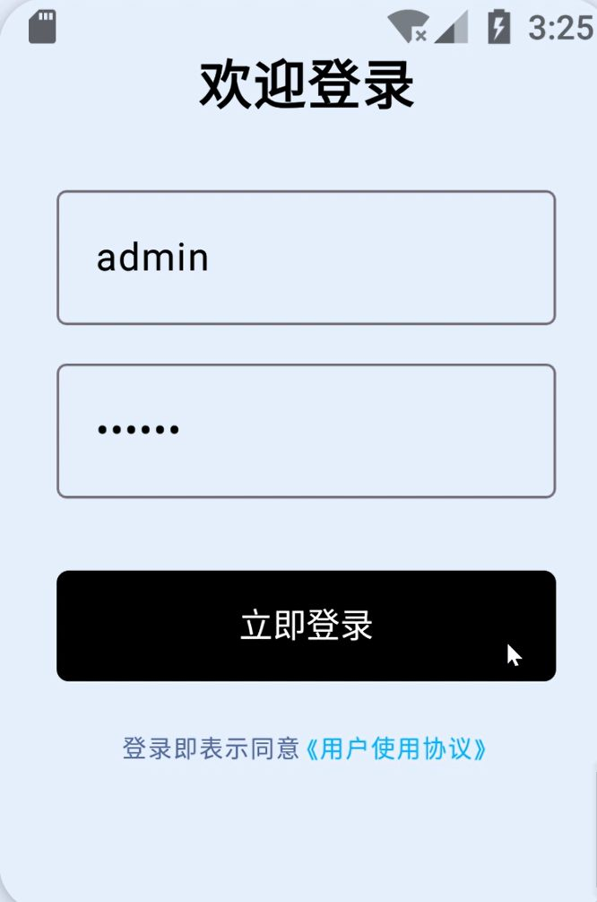
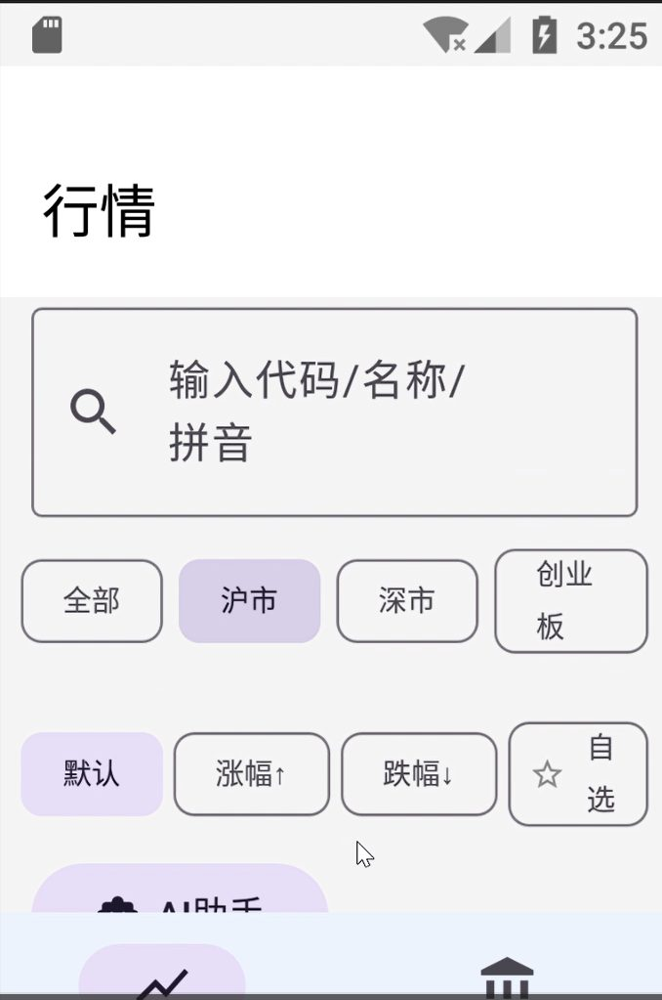
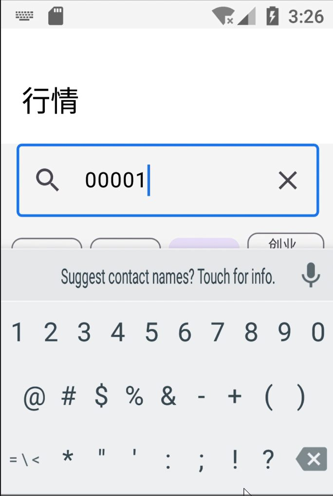
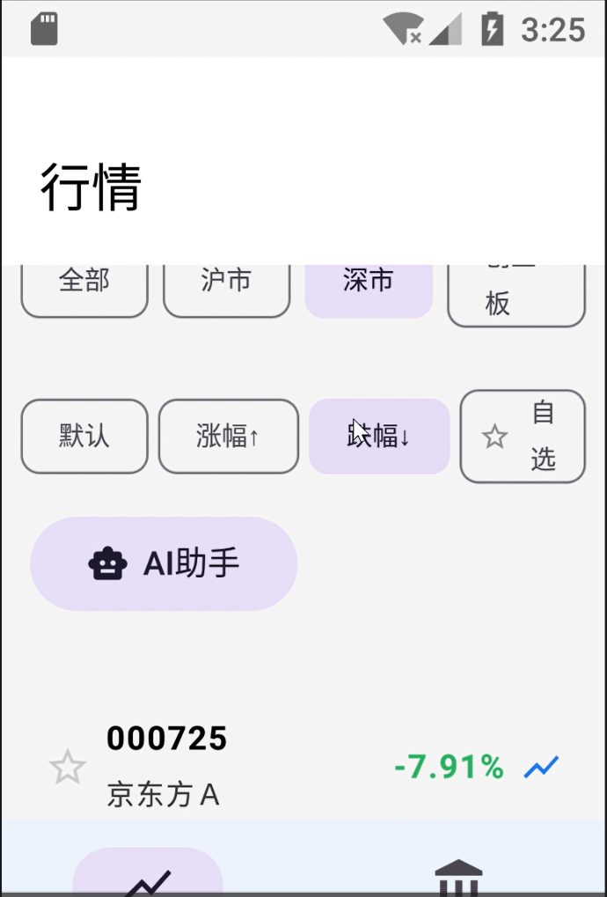
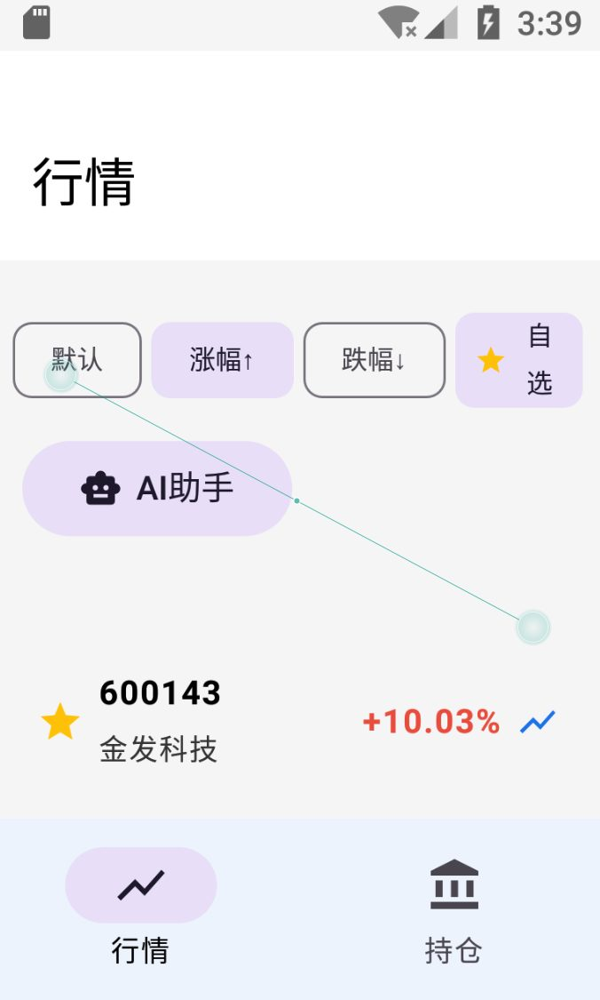
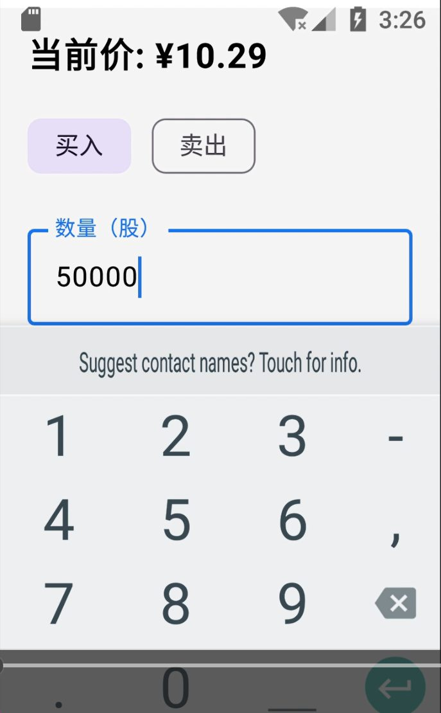
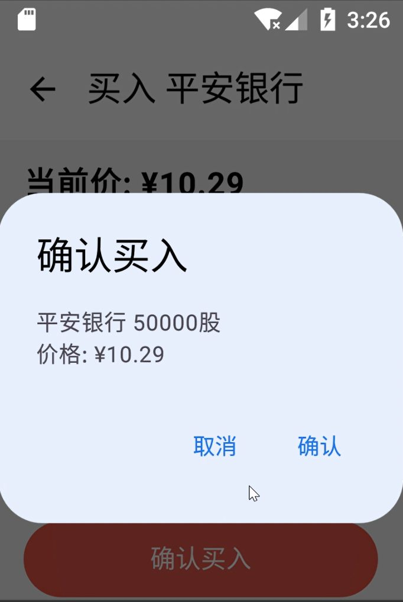
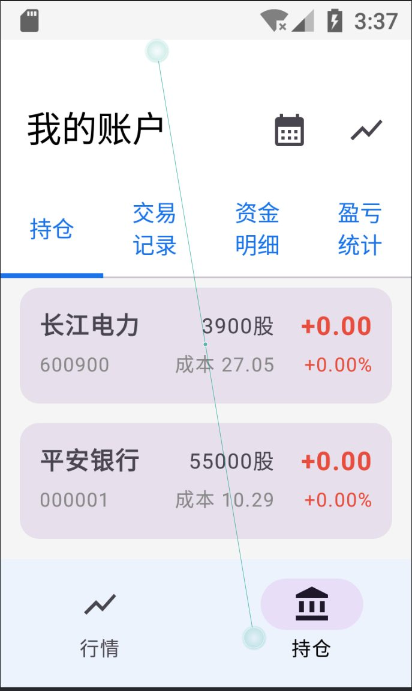
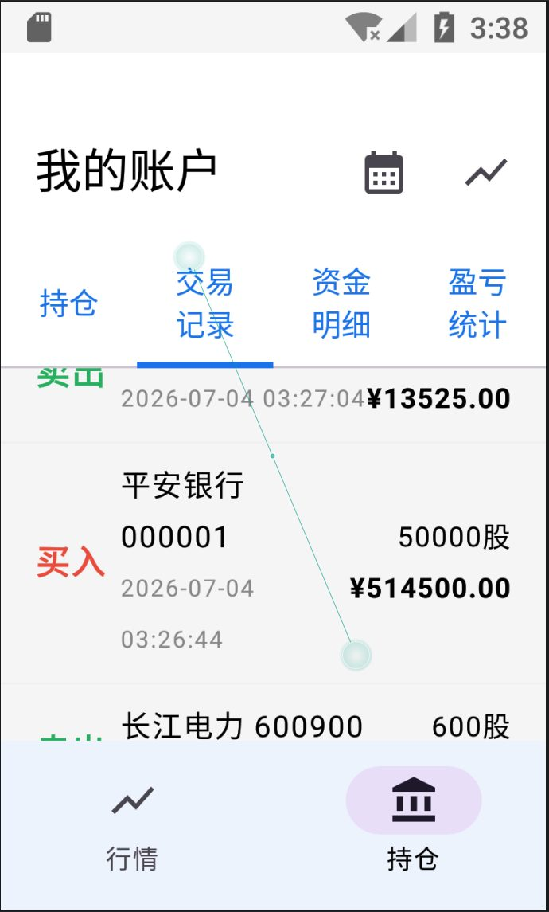
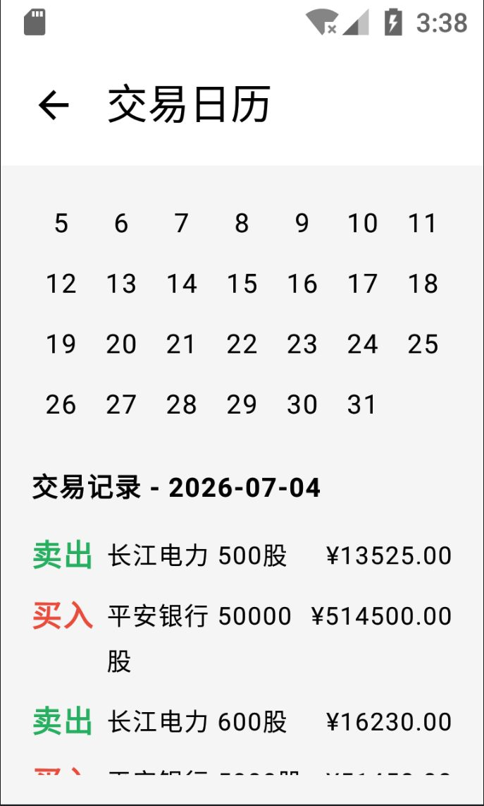
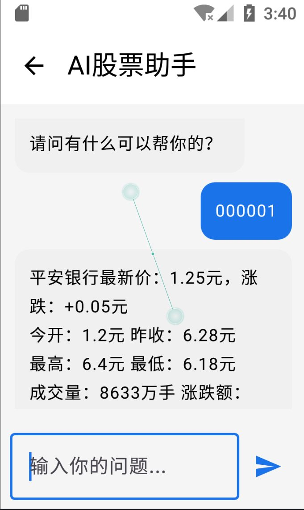
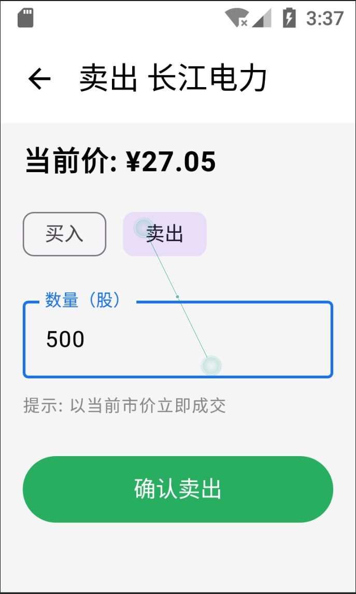
6. Screenshots — HarmonyOS


7. Testing & summary
- Module tests: login, quotes, search, K-line rendering (red-up / green-down), trade validation — all pass on both platforms;
- Integration tests: quotes → K-line → trading → positions data flow verified end to end;
- System tests: smooth full-app walkthrough on the Android emulator (API 25) and the HarmonyOS emulator.
Building the same product twice — once per platform — gave me a comparative understanding of modern declarative UI frameworks (Compose vs. ArkUI), state-management paradigms (ViewModel/Flow vs. @StorageLink/@Watch) and mobile charting techniques.